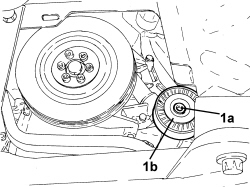

1092B80 AUXILIARY BELT FIXED TENSIONER (ONE) - R+R
- Path
- Procedures > 10 ENGINE > 1092 ENGINE COMPONENT MISCELLANEOUS DRIVES > 1092B WATER PUMP AND ALTERNATOR DRIVE > 1092B80 AUXILIARY BELT FIXED TENSIONER (ONE) - R+R
- Kind
- repair procedure (removal / refitting; the operation number is the code)
- Applies to
- engines: 2.4 JTD 20v; all production periods
- Interactive page
- https://sloeber94.github.io/elrnDB-aBrrSpdr/en/#/946004002
Applies to: engines: 2.4 JTD 20v; all production periods
 Removing
Removing
 Refitting
RefittingOp. 4450B04 RIGHT FRONT WHEEL - R.R
Op. 7055B91 RIGHT FRONT WHEEL ARCH LINER - R.R.
Op. 1092C26 BELT FROM AIR CONDITIONER COMPRESSOR DRIVING POWER STEERING PUMP - R + R
1. Undo the bolt (1a) and remove fixed tensioner (1b).

Applies to: engines: 2.4 JTD 20v; all production periods
Refitting
Removing- Position the fixed tensioner in its housing and secure it using the bolt.
Op. 1092C26 BELT FROM AIR CONDITIONER COMPRESSOR DRIVING POWER STEERING PUMP - R + R